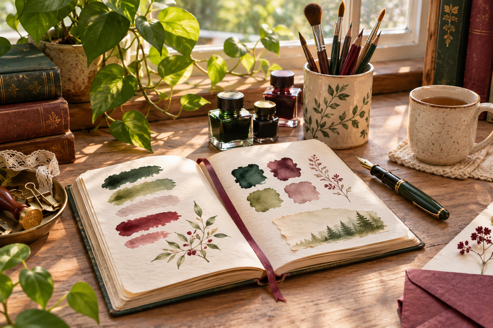

Pens & Inks
A page of new colours
Trying a few new inks and seeing how they look on the page, side by side.
A little ink. A little curiosity.
Pens, inks, and creative experiments - a journal of things tried, things learned, and things still in progress.
Explore the journal
Pens & Inks
Trying a few new inks and seeing how they look on the page, side by side.

On My Desk
A few small things on my desk that make writing and creating feel a bit more special.

Experiments
A relaxed sketching session, some simple motifs, and a reminder to keep things playful.

I'm a sationary enthusiast who finds a lot of joy in fountain pens, ink and time spent creating. Here I share ink swatches, pen thoughts, creative experiments and the crafts I'm learning along the way - from simple projects to new skills I'm still figuring out.
A little about me